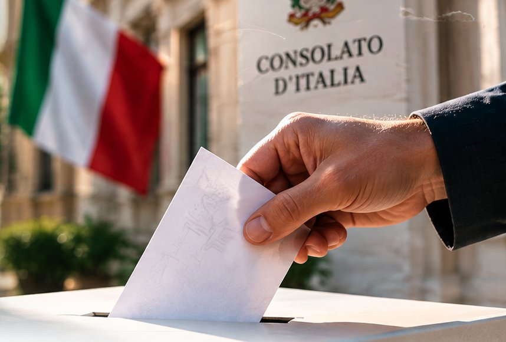
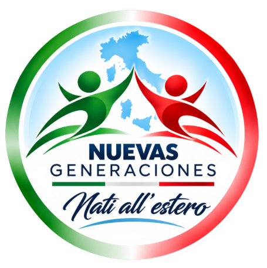

Participación y representación
Promover una representación cercana, abierta y conectada con la comunidad.


Nati all’estero + Nuevas Generaciones
Conocé nuestra lista, nuestras propuestas y la información necesaria para participar de la elección en la circunscripción de Mar del Plata.
Representación
Los Comités de los Italianos en el Exterior (COM.It.Es.) son organismos electivos de representación de la comunidad italiana residente en el exterior. Intervienen en asuntos vinculados con la colectividad y su relación con las instituciones italianas.
Consulado de Italia en Mar del PlataLas personas que participan
RIZZO Monica Patricia
Localidad: Mar del Plata
Institución: Presidenta Federación de Sociedades Italianas de Mar del Plata y zona - As. Emilia Romagna de Mar del Plata
FANTINI Luciano Nahuel
Localidad: Mar del Plata
Institución: Tesorero COMITES - As. Emilia Romagna de Mar del Plata / Centro Laziale Marplatense
MARINO Karina Mabel
Localidad: Tandil
Institución: Dante Alighieri de Tandil
MORI DELPONTE Thomas Christian
Localidad: Santa Clara
Institución: As. Emilia Romagna de Mar del Plata
ANTUNAU Hugo Daniel
Localidad: Necochea
Institución: CEIA de Necochea
VENTURELLI Micaela Belen
Localidad: Mar del Plata
Institución: Unione Regionale Siciliana Argentina (URSA)
LANI Romina
Localidad: Mar del Plata
Institución: Unione Marchigiana de Mar del Plata
BETTI Leonardo Daniel
Localidad: Mar del Plata
Institución: Sociedad Garibaldi de Mar del Plata
PICCOLINI MOSCUZZA Martín
Localidad: Mar del Plata
LADDAGA Santiago Manuel
Localidad: Mar del Plata
Institución: Fundador de la Asociación Giovani Lucani nel Mondo. Regione Basilicata
TRANCHINI Leandro
Localidad: Necochea
Institución: CEIA de Necochea
DI MAURO Mariano Nestor
Localidad: Mar del Plata
Institución: Regione Sicilia
BERNARDI Silvana Irma
Localidad: Miramar
SACCHI Alicia Raquel
Localidad: Mar del Plata
Institución: Familia Piemontesa de Mar del Plata
FORASTIERO Patricio
Localidad: Mar del Plata
Institución: Regione Basilicata
CHIATTI Susana Luisa
Localidad: Mar del Plata
Institución: Presidente de Familia Umbra de Mar del Plata y Prosecretaria de la Federación de Sociedades Italianas de Mar del Plata y zona.
Una comunidad italiana más unida, con nuevas generaciones
Ejes para validar
Estos bloques presentan áreas de trabajo orientativas. No constituyen compromisos oficiales hasta contar con la aprobación de ambas organizaciones.
Promover una representación cercana, abierta y conectada con la comunidad.
Impulsar oportunidades para el desarrollo de jóvenes y nuevas generaciones.
Fortalecer la transmisión cultural y el vínculo entre generaciones.
Escuchar necesidades y acercar información útil a la colectividad.
Mejorar la comunicación institucional y el acceso a recursos confiables.
Construir iniciativas y puentes de colaboración duraderos.
Información práctica
Las elecciones para la renovación y el establecimiento de los COMITES se celebrarán a finales de 2026.
Los COMITES de Italianos en el Extranjero son organismos que representan a la comunidad italiana en sus relaciones con las representaciones diplomáticas y consulares, y trabajan para integrar a la comunidad italiana residente en el país extranjero en el que se encuentran.
Los votantes que posean los requisitos legales para votar activamente, que residan y estén registrados en AIRE en el distrito consular durante al menos 6 meses con respecto a la fecha de la elección podrán participar en esta importante cita electoral.
La votación se realiza por correo, pero, a diferencia de las elecciones políticas y los referendos, el paquete electoral se envía únicamente a los votantes que hayan presentado una solicitud expresa para ser inscritos en el censo electoral para las elecciones de la COM.It.Es. antes del 4 de noviembre de 2026.
Atención: para recibir el paquete electoral, el votante deberá solicitar a su consulado de referencia su inscripción en el padrón electoral antes del 4 de noviembre de 2026.
Los ciudadanos pueden presentar el formulario de inscripción en el censo electoral para las elecciones de COM.It.Es. mediante las modalidades oficiales indicadas a continuación.
Descargar formulario de inscripciónConfirmá que cumplís las condiciones electorales y de residencia en el AIRE según las instrucciones oficiales vigentes.
Presentá la solicitud antes del 4 de noviembre de 2026 por una modalidad oficial.
Esperá el sobre electoral y seguí las indicaciones oficiales para marcar y enviar la boleta.
El sobre debe llegar dentro del plazo establecido: 4 de diciembre de 2026.
Respuestas rápidas
Son organismos electivos que representan a la comunidad italiana residente en el exterior.
En la circunscripción consular de Mar del Plata podrán votar quienes:
Se requiere una antigüedad de al menos seis meses en la circunscripción, tomando como referencia la fecha de las elecciones.
Punto fundamental: estar inscripto en el AIRE no significa estar inscripto automáticamente en el listado electoral de los COM.It.Es. Si querés participar, tenés que solicitar expresamente la inscripción dentro del plazo establecido.
No necesariamente. También deben verificarse las condiciones de residencia e inscripción indicadas oficialmente.
La solicitud es necesaria para participar mediante el voto por correspondencia, según el procedimiento oficial.
La fecha límite informada para solicitar la inscripción es el 4 de noviembre de 2026.
Si pertenecés a la circunscripción de Mar del Plata y querés votar, tenés que solicitar la inscripción en el listado electoral antes del 4 de noviembre de 2026.
Según la información del Consulado de Italia en Mar del Plata, la solicitud puede realizarse:
Consultá directamente al Consulado de Italia en Mar del Plata con suficiente anticipación.
Podés marcar hasta 4 preferencias de la misma lista.
El sobre con el voto debe llegar hasta el 4 de diciembre de 2026, según la información publicada.
En el sitio del Consulado de Italia en Mar del Plata, enlazado en esta página.